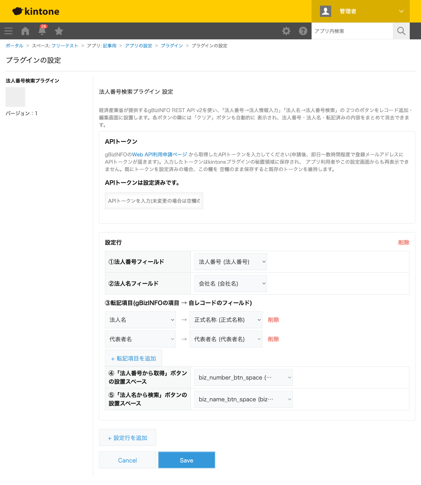
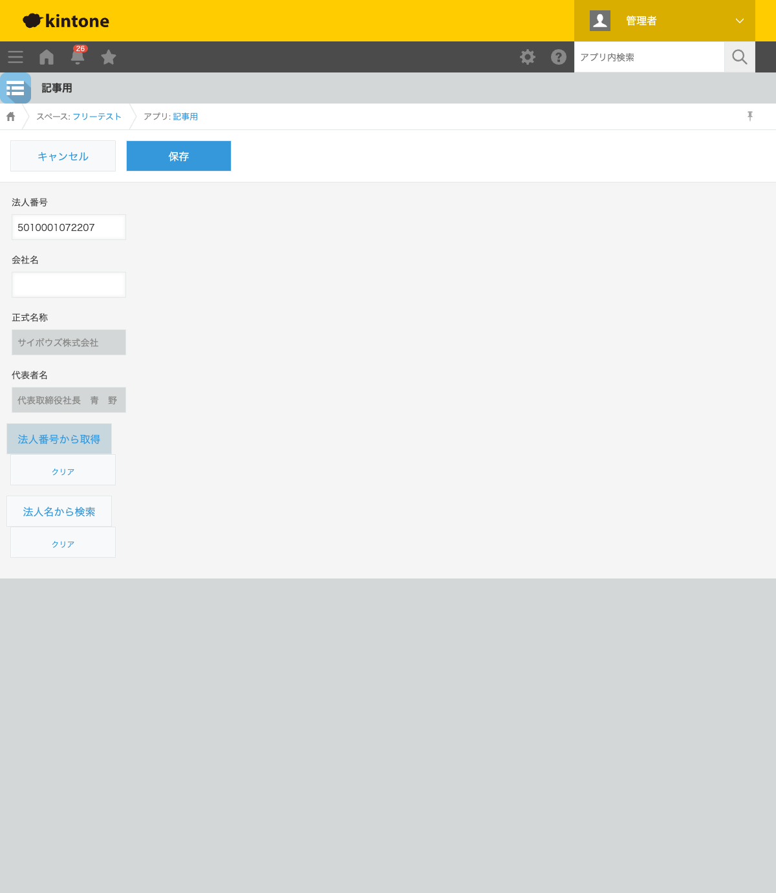

GovAppsプラグイン 安全性を確認できる無料kintoneプラグイン集
取引先アプリなどで法人番号や会社の正式名称・代表者名を手入力していると、入力ミスや二度手間が 発生しがちです。この記事では、経済産業省が公開しているgBizINFOと連携し、法人番号(または法人名) から会社情報を自動入力する方法を、実際にAPIへリクエストして取得した結果つきで解説します。
kintone標準の「ルックアップ」フィールドは、同じkintone環境内の別アプリを参照する機能で、 外部のWeb APIから情報を取得することはできません。法人番号から会社情報を自動入力するには、 外部サーバー(gBizINFO)への通信が必須になるため、標準機能だけでは実現できません。
外部APIと連携する以上、「誰が」「どうやって」APIトークンを扱うかが特に重要になります。
| 方法 | 向いている場合 | 注意点 |
|---|---|---|
| JavaScriptを自作する | 社内に開発者がいて、細かい制御をしたい場合 | 生のfetch/XHRでAPIトークンを直接ブラウザコードに書くと、開発者ツールから誰でもトークンを読み取れてしまう。安全に扱うにはkintone.plugin.app.proxy()のようなプラグイン専用の仕組みの実装が必要 |
| 有料の他社プラグイン | 予算があり、手厚いサポートを求める場合 | 月額課金が発生する。ソースコードが非公開で、APIトークンの保存方法を利用者側で確認しにくい |
| GovAppsプラグイン(このプラグイン) | 無料で試したい、APIトークンの扱いを自分の目で確認してから導入したい場合 | 設定できる転記項目はスカラー値のみ(特許・補助金等の配列項目は非対応) |
法人番号検索プラグインは無料・広告なしで、
ソースコードをGitHubで全公開
しています。APIトークンはkintone.plugin.app.setProxyConfig()という、kintoneプラグイン専用の
秘匿領域に保存する仕組みを使っており、保存後は設定画面を開き直しても再表示されません(スクリーン
ショットの「APIトークンは設定済みです」という表示がその状態です)。この保存方法も含めてソースが
公開されているため、自治体・企業のセキュリティ担当者が「本当に安全にトークンを扱っているか」を
自分の目で確認できます。
法人番号検索プラグインは、gBizINFOの Web API利用申請ページから 無料で取得できるAPIトークンを設定するだけで使えます(申請後、即日〜数時間程度で届きます)。

レコード追加画面で法人番号(5010001072207、サイボウズ株式会社の実際の法人番号)を
入力し、「法人番号から取得」ボタンを押すと、gBizINFOへ実際にリクエストが送られ、
正式名称・代表者名が自動的に入力されます。

法人名の一部だけが分かっている場合は「法人名から検索」ボタンから部分一致検索ができ、候補が 複数あれば一覧から選べます。選択すると、続けて法人番号からの詳細取得も自動的に行われます。
api.info.gbiz.go.jp(gBizINFO)のみで、それ以外の外部サーバーへは通信しません。